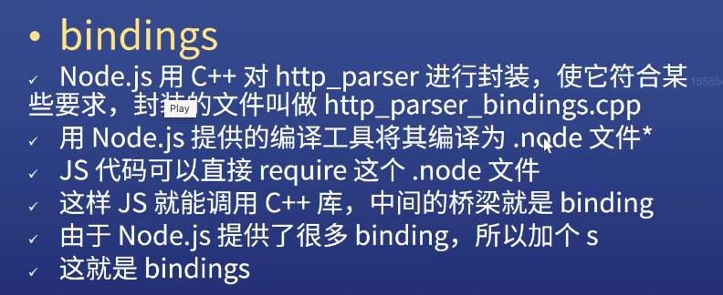

// node版本
// 双数 稳定版 单数 非稳定版 使用8以上版本
// node.js安装
// mac
// homebrew
// 周边工具
// nrm 切换下载源
// yarn yrm
// webstorm vscode
// ts-node可以运行TypeScript的node
// Mac
// iTerm2
// oh my zsh
// Node.js 不是web框架
// Node.js 不是编程语言
// Node.js 是一个平台
// 将多种技术组合在一起
// 让JS也能调用系统接口 开发后端应用
// Node.js 使用哪些技术
// V8引擎
// libuv
// C/C++ 实现的c-ares http-parse OpenSSL Zlib等库
// Node.js架构
// Node.js api
// Node.js bingdings C/C++插件
// JS引擎 v8 异步IO libuv DNS解析c-ares 加密解析OpenSSL 其他http-parse等
// 如果看源码 推荐 0.10版本
// 什么是bingdings
// 背景
// C/C++ 实现 http-parse 很高校
// 如果只会JS 想调用怎么办
// 直接调用不肯呢个 需要一个桥梁
// bingdings
// JS 使用 C++
// C++使用 JS 回调